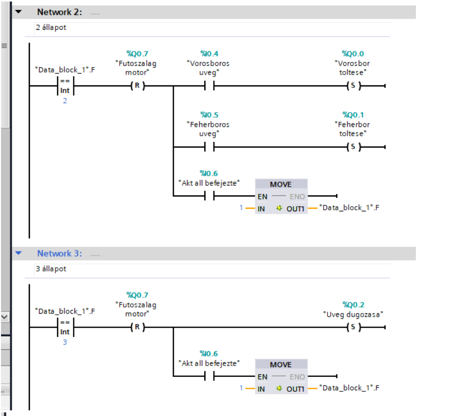
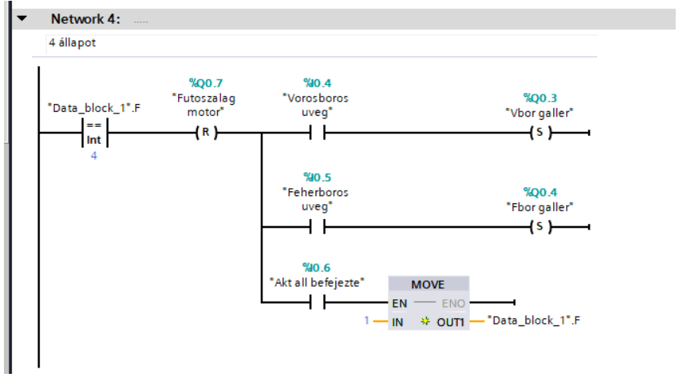
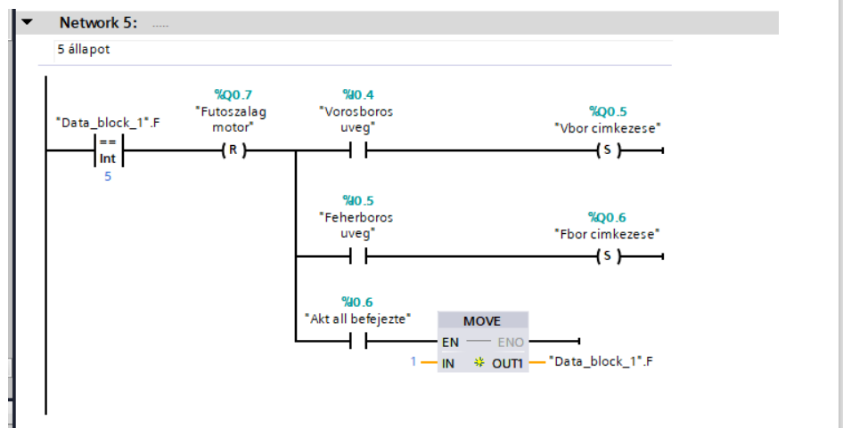
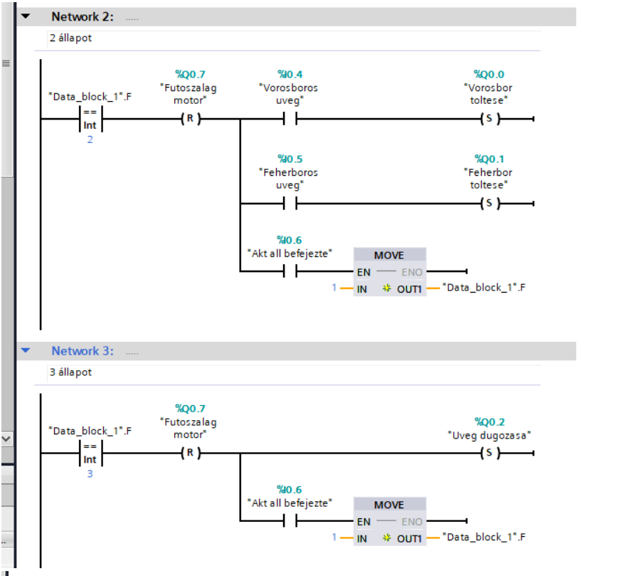
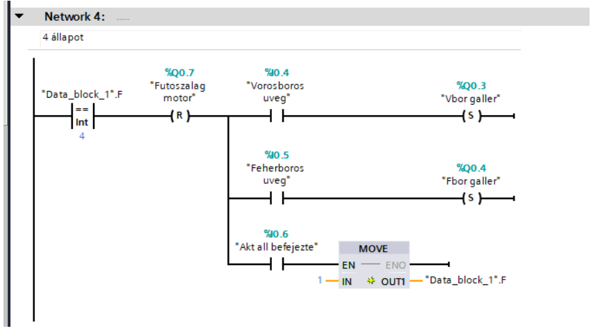
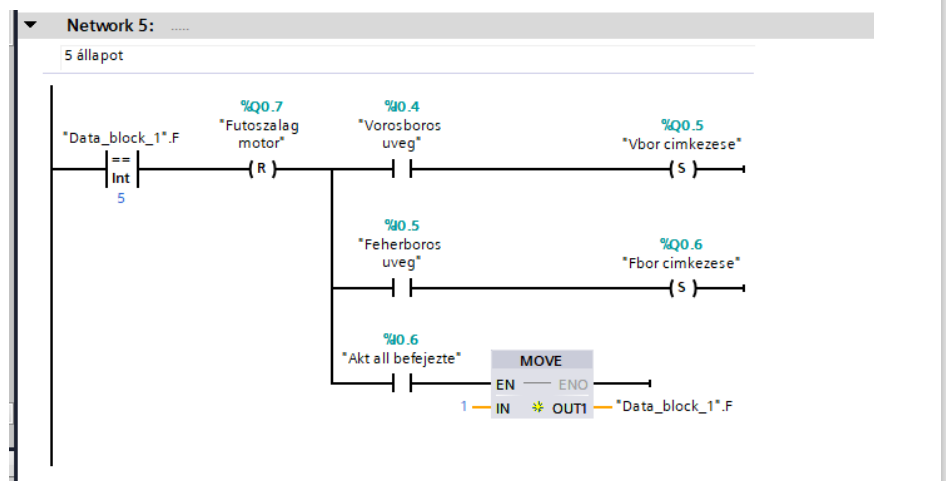

EasyVeep - Borpalackozó üzem szimuláció
Feladat leírása:
A borpalackozó üzembe világos és sötét üvegek érkeznek. A palacktípus kiválasztása egy véletlenszám-generátor segítségével, vagy a felület alján található gombok egyikére történő kattintással történik. A világos üveget fehérborral kell megtölteni, majd a fehérbornak megfelelő dugóval és címkével kell ellátni. A sötét üveget értelemszerűen vörösborral kell megtölteni, és a hozzá tartozó dugóval, illetve címkével kell felszerelni. A gyártási folyamat végén vizuális minőségellenőrzés zajlik. A futószalag sebessége egérkattintással szabályozható.
A rendszer bemenetei (érzékelők):
- 4 érzékelő a palack pozíciójának detektálására a 4 megmunkáló állomás valamelyikében
- 2 érzékelő az üveg típusának (világos vagy sötét) felismerésére
- 1 érzékelő annak visszajelzésére, hogy az aktuális állomás befejezte-e a műveletet
A rendszer kimenetei (végrehajtók):
- 2 végrehajtó a töltéshez (1 a vörösbor, 1 a fehérbor palackozásához)
- 2 végrehajtó a főcímkézéshez (1 a vörösboros, 1 a fehérboros üveghez)
- 2 végrehajtó a nyakcímkézéshez (1 a vörösboros, 1 a fehérboros üveghez)
- 1 végrehajtó a dugózás elvégzéséhez
- 1 végrehajtó a futószalag motorjának működtetéséhez
Megvalósítás:
A projekt vezérlése egy S7-1200 PLC-n, TIA Portal környezetben, LAD programozási nyelven készült. A program szerkezete egy állapotgépre épül, ahol az aktuális fázist egy adatblokkban tárolt integer változó határozza meg.
A vezérlés logikája:
- 1. állapot (Alaphelyzet & Figyelés): Ebben a fázisban az összes beavatkozó alaphelyzetbe áll (Reset), kivéve a futószalag motorját, amely elindul (Set). A rendszer TON (bekapcsolás-késleltető) időzítők segítségével, 2 másodperces szűréssel figyeli, hogy egy palack megérkezik-e valamelyik megmunkáló állomáshoz. Ha igen, a program a megfelelő állapotba ugrik (MOVE utasítással).
- 2. állapot (Bor töltése): A futószalag leáll. A rendszer a szenzorok alapján eldönti, hogy vörös- vagy fehérboros üveg érkezett-e, majd bekapcsolja a megfelelő töltő aktuátort.
- 3. állapot (Dugózás): A futószalag leáll, és a dugózó mechanizmus aktiválódik, függetlenül az üveg típusától.
- 4. állapot (Nyakcímkézés / Gallérozás): A futószalag leáll. A szenzorjelek alapján a megfelelő (vörös vagy fehér) nyakcímkét felhelyező aktuátor lép működésbe.
- 5. állapot (Főcímkézés): A futószalag leáll, és az üveg típusának megfelelő főcímke kerül a palackra.
A 2., 3., 4. és 5. állapotok mindegyikéből az "Aktuális állomás befejezte" (%I0.6) szenzor jelzése lépteti vissza a rendszert az 1. állapotba (MOVE 1), újraindítva a futószalagot a következő palackhoz.
Létradiagramok (Networks):
 




